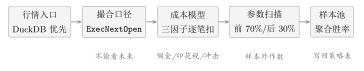

第十七章回测到底在验证什么？—— 成本、前视与样本池
17.1年化 60% 的策略，实盘第一周亏了 3%
二零二六年九月七日，星期一。我把上一章挑出来的那条双均线策略塞进回测框，按下运行。 四十分钟后，屏幕上给出的成绩单是：年化收益 61.4%、夏普 2.31、最大回撤 12.0%、胜率 70.8%、总成交 348 笔。曲线漂亮得像一条被熨过的斜线。 我把它接进了模拟盘。九月八日到九月十二日，五个交易日，账面累计 \(-3.1\%\)。 一根 K 线都没改，一个参数都没动。同一套规则，在“历史”里是印钞机，在“这五天”里是碎钞机。 我一开始的反应很自然：运气不好。第二反应更自然：市场变了。这两个解释都不可检验，所以都等于没解释。 真正有用的那个解释，是我把回测的账本一栏一栏摊开之后才看出来的。摊开之后我发现，我在“历史”里赚的那 61.4%，有相当一部分来自三笔我从来没付过的钱：- 摩擦没算：我在回测里把成交当成“点一下就成”，没扣佣金、没扣印花税、没扣自己下单把价格顶上去的那部分；
- 未来偷看：我用当天的收盘价算信号，又用当天的收盘价成交——这在 T+1 的市场里根本不可能；
- 样本抽歪：我的“70.8% 胜率”是从一只股票的三笔交易里数出来的。
17.2台架上的发动机，和装在车上的发动机
一台发动机在台架上测出 300 马力。装到车上，跑了三个月，车主说“感觉没那么有劲”。
台架错了吗？没有。台架测的是发动机本身。车跑起来之后，马力要分给变速箱、水泵、空调压缩机，还要对抗风阻和轮胎滚动阻力。
差额不在发动机里，在发动机和地面之间——在那条从曲轴一直连到轮胎的传动链上。
回测里的成本模型，就是这条传动链的账本。它不加马力，它只告诉你：从曲轴出来的 300 匹，到轮胎上还剩多少。
17.3把摩擦写成公式：三因子成本模型
先说一个“差不多对”的版本：交易成本就是佣金，买卖各收万分之三。 这个版本抓住了三成。它漏掉的是三件在 A 股每天都真实发生的事：（1）佣金有最低收费；（2）卖出还要交印花税；（3）你的单子会把价格推走，这叫市场冲击。 系统在internal/backtest/cost_model.go 里把这三件事写成了一项一项相加的成本函数。它的官方注释直接把对标对象写了出来：
\[\text{cost} \;=\; a\cdot\abs{x} \;+\; b\cdot\sigma\cdot\frac{\abs{x}^{1.5}}{\sqrt{V}} \;+\; c\cdot x , \tag{17.1}\]
其中 \(x\) 是这一笔的成交金额（元），\(\sigma\) 是标的的日波动率，\(V\) 是当日的成交金额（元）。三项的含义分别是：
- \(a\abs{x}\)：比例费用。A 股里就是佣金（买卖都收，最低 5 元）加上印花税（只在卖出时收 \(0.05\%\)）；
- \(b\sigma\abs{x}^{1.5}/\sqrt{V}\)：市场冲击。这叫 Almgren--Chriss 平方根冲击律；
- \(c\,x\)：收盘偏置。因为回测里信号和成交都用“收盘价”，口径一致时这项取 \(0\)。
DefaultCostModel() 里，我把它们抄成表 表 17.1。
| 字段 | 默认值 | 名称 | 说明 |
CommissionRate | \(0.0003\) | 佣金率 | 万分之三，买卖都收 |
MinCommission | \(5\) | 最低佣金 | 单笔不足 5 元按 5 元收 |
StampDutyRate | \(0.0005\) | 印花税 | \(0.05\%\)，仅卖出 |
ImpactCoeff | \(1.0\) | 冲击系数 \(b\) | 设为 \(0\) 即关闭冲击项 |
ImpactExponent | \(1.5\) | 冲击指数 | 即式 式 (17.1) 里的 1.5 次方 |
BiasCoeff | \(0.0\) | 收盘偏置 \(c\) | 收盘价成交且口径一致时为 0 |
VolWindow | \(60\) | 波动率窗口 | 用最近 60 根 K 线估 \(\sigma\) |
买入成本 = 佣金 + 冲击 + 偏置；卖出成本 = 佣金 + 印花税 + 冲击 + 偏置。
系统源码 internal/backtest/cost_model.go 的 DefaultCostModel() 与 BuyCost/SellCost；核对时间 2026-09-24。
17.3.1最低佣金：一条给小额交易设的税率
命题 17.1（最低佣金抬高有效费率）
设佣金率为 \(a\)、最低佣金为 \(M\)（元），一笔金额为 \(x>0\) 的成交，实收佣金为
\[\mathrm{fee}(x)=\max\{a x,\; M\}. \tag{17.2}\]
记有效佣金率 \(\alpha(x)=\mathrm{fee}(x)/x\)。则
- 当 \(x\ge x^\ast:=M/a\) 时，\(\alpha(x)=a\)，是个常数；
- 当 \(0<x<x^\ast\) 时，\(\alpha(x)=M/x\)，关于 \(x\) 严格递减，且 \(\lim_{x\to0^+}\alpha(x)=+\infty\)；
- 因此 \(\alpha\) 在 \(x=x^\ast\) 处取到最小值 \(a\)，且 \(\alpha(x)\ge a\) 对一切 \(x>0\) 成立。
\[x^\ast=\frac{5}{0.0003}=16666.67\ \text{元}. \tag{17.3}\]
| 成交金额 \(x\)（元） | 实收佣金（元） | 有效费率 \(\alpha(x)\) | 相对名义费率 |
| \(3{,}000\) | \(5.00\) | \(0.1667\%\) | \(5.56\times\) |
| \(5{,}000\) | \(5.00\) | \(0.1000\%\) | \(3.33\times\) |
| \(10{,}000\) | \(5.00\) | \(0.0500\%\) | \(1.67\times\) |
| \(16{,}667\) | \(5.00\) | \(0.0300\%\) | \(1.00\times\) |
| \(50{,}000\) | \(15.00\) | \(0.0300\%\) | \(1.00\times\) |
本书按 internal/backtest/cost_model.go 的 fee(x)=max(0.0003x,5) 复算；参数取自同文件 DefaultCostModel()。
证明■
(i) 若 \(x\ge M/a\)，则 \(ax\ge M\)，于是 \(\max\{ax,M\}=ax\)，除以 \(x\) 得 \(\alpha(x)=a\)。
(ii) 若 \(0<x<M/a\)，则 \(ax<M\)，于是 \(\max\{ax,M\}=M\)，\(\alpha(x)=M/x\)。对 \(x\) 求导：
\[\alpha'(x)=-\frac{M}{x^2}<0 \quad(M>0,\;x>0),\]
故在 \((0,x^\ast)\) 上严格递减；又 \(\lim_{x\to0^+}M/x=+\infty\)。
(iii) 由 (i)(ii)，\(\alpha\) 在 \((0,x^\ast)\) 上为 \(M/x>x^\ast\) 的单调下降段，在 \([x^\ast,\infty)\) 上恒为 \(a\)，且左极限 \(\lim_{x\to x^{\ast-}}\alpha(x)=M/x^\ast=a\)。故 \(\alpha\) 在 \(x^\ast\) 处连续且取最小值 \(a\)；其余各处 \(\alpha(x)\ge a\)。\(\blacksquare\)
17.3.2平方根冲击律：为什么大单必须拆
现在看式 式 (17.1) 里最不像“费用”的那一项。冲击项的形式是 \(\abs{x}^{1.5}/\sqrt{V}\)，两个指数都不好看。但把它除以 \(x\)，它会突然变得极干净。定义 17.2（参与率）
一笔金额为 \(x\) 的委托，相对于当日成交金额 \(V\)，其参与率定义为
\[\rho \;=\; \frac{x}{V}\in(0,1). \tag{17.4}\]
命题 17.3（平方根冲击律）
在上述成本模型下，令 \(I(x)=b\,\sigma\,x^{1.5}/\sqrt{V}\) 为单笔冲击成本（元），则
- 单位金额的冲击成本为
\[\frac{I(x)}{x}\;=\;b\,\sigma\sqrt{\rho}, \tag{17.5}\]即冲击成本率正比于参与率的平方根，与 \(x\)、\(V\) 的绝对大小无关，只通过 \(\rho\) 起作用；
- 单调性：\(I(x)\) 关于 \(x\) 严格递增；(17.5) 关于 \(\rho\) 严格递增且上凸（凹函数）；
- 可加性尺度：若把金额 \(x\) 与成交量 \(V\) 同时放大 \(\lambda\) 倍，则冲击成本率不变、冲击成本放大 \(\lambda\) 倍；
- 拆分定理：把一笔金额 \(x\) 等分成 \(k\) 笔分别下单，总冲击成本下降为原来的 \(1/\sqrt{k}\)。
证明■
(i) 由 \(I(x)=b\sigma x^{1.5}/\sqrt{V}\) 得
\[\frac{I(x)}{x}=b\sigma\frac{x^{0.5}}{\sqrt{V}}=b\sigma\sqrt{\frac{x}{V}}=b\sigma\sqrt{\rho}.\]
(ii) 先看 \(I\)：\(x^{1.5}\) 在 \(x>0\) 上严格递增，故 \(I\) 严格递增。再看 \(g(\rho)=b\sigma\sqrt{\rho}\)：\(\sqrt{\cdot}\) 在 \((0,\infty)\) 上严格递增且严格上凸（二阶导 \(-\tfrac14\rho^{-3/2}<0\)）；\(b,\sigma>0\) 不改变单调性与凸性。
(iii) 代入 \(x\to\lambda x\)、\(V\to\lambda V\)：
\[\frac{I(\lambda x;\lambda V)}{\lambda x}
=\frac{b\sigma(\lambda x)^{1.5}/\sqrt{\lambda V}}{\lambda x}
=b\sigma\frac{\lambda^{1.5}x^{0.5}}{\lambda^{0.5}\sqrt{V}\cdot\lambda}
=b\sigma\sqrt{\rho}=\frac{I(x;V)}{x},\]
即成本率不变；而 \(I(\lambda x;\lambda V)=\lambda x\cdot b\sigma\sqrt{\rho}=\lambda\,I(x;V)\)，成本放大 \(\lambda\) 倍。
(iv) 每笔金额 \(x/k\)，由 (i) 每笔冲击成本为
\[\frac{x}{k}\cdot b\sigma\sqrt{\frac{x/k}{V}}
=b\sigma\,\frac{x^{1.5}}{k^{1.5}\sqrt{V}},\]
\(k\) 笔相加得
\[k\cdot b\sigma\frac{x^{1.5}}{k^{1.5}\sqrt{V}}
=\frac{b\sigma x^{1.5}}{\sqrt{V}}\cdot\frac{1}{\sqrt{k}}
=\frac{I(x)}{\sqrt{k}}. \qquad\blacksquare\]
注 17.4（平方根律在哪里失效）
式 (17.5) 不是自然定律，它是一条经验近似。三处会失效：
第一，\(V\) 是外生的。模型把当日成交金额 \(V\) 当成你不在场时的量。当 \(\rho\) 变大（比如超过 \(10\%\)），你自己就是 \(V\) 的主要成分，\(V\) 会随你变化，公式自相矛盾。
第二，冲击有永久与暂时之分。真实冲击里有一部分会随时间衰减回去，另一部分留在了价格里。这里把两者合并成一个瞬时项。
第三，拆分不是免费的。命题 17.3(iv) 只算冲击，没算拆单带来的时间风险和撤单/漏单概率。\(k\to\infty\) 时冲击趋零，但你的持仓暴露时间趋于无穷——所以最优拆分数是一个有内部最小值的优化问题，不是“越拆越好”。
17.3.3把上面两笔账合起来：一次往返要付多少
现在算一次完整的“买入 \(\to\) 卖出”。用九月二十三日库里那只真实标的做例子：sh600519，当日收盘 1251.241 元，最近 60 个交易日对数收益率的标准差 \(\sigma\) \(=0.014433\)2只读查询 stock.ohlc 中 sh600519 的前 60 根日线，按 \(\sigma=\mathrm{std}(\ln(P_t/P_{t-1}))\) 复算；查询日 2026-09-24。3。
假设我下单 50,000 元，当日成交金额取 \(V=\) \(1.33222\times10^{9}\)4 元（该标的当日库内记录的 amount）。代入：
\begin{align}\text{买入佣金} &= \max\{0.0003\times 50000,\;5\} = 15.00\ \text{元}, \tag{17.6}\\
\text{买入冲击} &= 1.0\times 0.014433\times\frac{50000^{1.5}}{\sqrt{1.33222\times10^{9}}} = 4.42\ \text{元}, \tag{17.7}\\
\text{卖出佣金} &= 15.00\ \text{元}, \tag{17.8}\\
\text{卖出印花税} &= 0.0005\times 50000 = 25.00\ \text{元}, \tag{17.9}\\
\text{卖出冲击} &= 4.42\ \text{元}. \tag{17.10}\end{align}
往返合计 \(63.84\) 元，占本金的 \(0.1277\%\)。
这个数单独看很小。但它乘上交易频率就变了性质：若这条策略一年往返 50 次，光成本就是 \(0.1277\%\times 50 = 6.39\%\)。你回测里看到的 61.4% 年化，是要先扣掉这 6.39% 的。
本章第一个结论
摩擦不是“扣几个点”，它是与交易频率相乘的项。
频率 \(\times\) 单次成本率 \(=\) 年化成本。
所以一条高换手策略的真实门槛，比它的回测收益率低得多——低多少，取决于它一年来回多少次。
频率 \(\times\) 单次成本率 \(=\) 年化成本。
所以一条高换手策略的真实门槛，比它的回测收益率低得多——低多少，取决于它一年来回多少次。
17.4比成本更贵的错：偷看未来
成本是“少赚”，前视偏差是“假赚”。后者危险得多，因为它会让一个根本不成立的策略在回测里封神。
一个学生每次模拟考都接近满分。你翻他的卷子，发现他在“已给出答案”的那一页折了角。
他没有作弊——他只是把答案那页翻开了。而在真实考场上，那一页是密封的。
回测里的“当日收盘价成交”，就是那一页折角：你用一个当天的收盘价算出信号，又用这个收盘价成交。真实世界里，你要在收盘那一刻同时完成“看到收盘价”和“以这个价格成交”两件事，这在物理上不可能。
定义 17.5（信息集与可测决策）
设 \(P_t=(P_{t}^{\mathrm{open}},P_t^{\mathrm{high}},P_t^{\mathrm{low}},P_t^{\mathrm{close}},V_t)\) 为第 \(t\) 个交易日的完整行情向量。定义到第 \(t\) 日收盘为止的信息集
\[\mathcal F_t \;=\; \sigma\bigl(P_0,P_1,\dots,P_t\bigr), \tag{17.11}\]
即“由第 \(0\) 到第 \(t\) 日全部行情生成的信息”。若某个决策变量 \(D_t\) 是 \(\mathcal F_t\)-可测的，就说它是无前视的；若 \(D_t\) 用到 \(P_{t+1},P_{t+2},\dots\) 中的任何分量，就说它有前视偏差。
命题 17.6（成交价口径决定有无前视）
设策略在第 \(t\) 日的信号为 \(s_t=g(\mathcal F_t)\)。比较两种成交口径：
- 次日开盘口径：成交价取 \(P_{t+1}^{\mathrm{open}}\)；
- 当日收盘口径：成交价取 \(P_t^{\mathrm{close}}\)。
证明■
(i) 次日开盘口径下，第 \(t\) 日产生的委托在第 \(t+1\) 日开盘撮合。委托的全部输入 \(s_t=g(\mathcal F_t)\) 是 \(\mathcal F_t\)-可测的，成交价 \(P_{t+1}^{\mathrm{open}}\) 出现在 \(t+1\) 日，晚于决策时刻。决策与成交满足“先决策、后成交”的因果顺序，故无前视。
(ii) 若成交价取 \(P_t^{\mathrm{close}}\)，则成交时刻 \(=\,\)收盘时刻 \(\tau_t^{\mathrm{close}}\)。而 \(P_t^{\mathrm{close}}\) 由收盘集合竞价在 \(\tau_t^{\mathrm{close}}\) 处产生——在 \(\tau_t^{\mathrm{close}}\) 之前，\(P_t^{\mathrm{close}}\) 不属于任何参与者已知的信息。要以 \(P_t^{\mathrm{close}}\) 成交，参与者必须在 \(\tau_t^{\mathrm{close}}\) 之前提交订单，而他提交订单时依据的 \(s_t=g(\mathcal F_t)\) 中不含 \(P_t^{\mathrm{close}}\)。因此“用 \(P_t^{\mathrm{close}}\) 算信号、又用 \(P_t^{\mathrm{close}}\) 成交”这一对条件不能同时由同一次决策实现。\(\blacksquare\)
internal/backtest/service.go 里有一个开关叫 ExecNextOpen，含义是“在下一根 K 线的开盘价撮合”。它的注释把理由写在明处：消除前视。同一层还按标的自适应涨跌停、并按披露日注入真实财务数据，防止“用年报给年报发布前的股票打分”。
这是我最早、也是最贵的一个误解。
回测不能预测，它只能证伪。一个策略通过了回测，只说明“在我检查过的那些错误里，它没有犯”；它不说明这个策略在明天会赚钱。
把这两件事分清之后，一件让人难受的事就变得可以接受了：回测好、实盘差，是常态而不是异常。回测的价值在于它能把“明显不成立”的策略用很低的成本淘汰掉。它是一道初筛，不是一份承诺。
真正需要警惕的是相反的情形：回测特别好。一个年化远高于市场、回撤又特别小的结果，首先应该被怀疑有前视、有幸存者偏差、或者样本太少——本章余下的部分就是在教你怎么怀疑它。
17.5胜率是怎么被一只股票骗出来的
现在讲第三笔账：样本。 九月七日那天，我看到的“胜率 70.8%”，分母是 348 笔成交——听起来很扎实。可是这 348 笔是从哪里来的？ 我查了一下：它们全部来自一只股票。 问题不在于“一只股票能不能做回测”，而在于单只股票的成交笔数少、且互相关。当我们只在一只股票上跑一条策略，来回反复，样本之间的独立性很弱，而笔数又少到统计量没有意义。极端情况下，一只股票上只成交了三笔、三笔全赢，屏幕上就会显示“胜率 100%”。 系统的修复办法叫样本池回测，实现在internal/strategy/service.go 的 RefreshStrategyMetrics 里。它的做法是：
- 样本池优先取当前持仓（
position_status='open'的标的）；持仓为空则回退到基准指数sh000300，再回退sh000001； - 每个样本加载
sampleLookback\(=1500\) 根 K 线（比单次回测长得多，目的就是让单只标的也能产生足量成交）； - 胜率不再按标的算，而是把所有样本的已平仓交易汇总起来算：\(\text{aggWins}/(\text{aggWins}+\text{aggLosses})\)；
- K 线只加载一次，用有界 worker 池并行跑（并发数上限 8），避免重复读库。
命题 17.7（交易聚合胜率与标的平均胜率不相等）
设样本池有 \(m\) 只标的。第 \(j\) 只标的的已平仓交易中，盈利 \(w_j\) 笔、亏损 \(\ell_j\) 笔，总笔数 \(n_j=w_j+\ell_j>0\)。定义
\begin{align}\widehat p_{\text{交易}}&=\frac{\sum_{j=1}^{m}w_j}{\sum_{j=1}^{m}n_j}
&&\text{（\textbf{交易聚合胜率}）}, \tag{17.12}\\
\widehat p_{\text{标的}}&=\frac{1}{m}\sum_{j=1}^{m}\frac{w_j}{n_j}
&&\text{（\textbf{标的平均胜率}）}. \tag{17.13}\end{align}
则
- \(\widehat p_{\text{交易}}=\widehat p_{\text{标的}}\) 当且仅当所有 \(n_j\) 相等；
- \(\widehat p_{\text{交易}}\) 是“从全部成交中均匀随机取一笔，该笔为盈利”这一事件的无偏频率估计；而 \(\widehat p_{\text{标的}}\) 一般不是；
- 存在例子使 \(\widehat p_{\text{标的}}=100\%\) 而 \(\widehat p_{\text{交易}}\) 远低于 \(100\%\)。
证明■
(i) 记 \(p_j=w_j/n_j\)。把 \(\widehat p_{\text{交易}}\) 写成一个笔数加权平均：
\[\widehat p_{\text{交易}}
=\frac{\sum_j n_j p_j}{\sum_j n_j}
=\sum_j \omega_j p_j,\qquad \omega_j=\frac{n_j}{\sum_i n_i}.\]
而 \(\widehat p_{\text{标的}}=\sum_j \frac1m p_j\)，是等权平均。两者都是 \(p_j\) 的凸组合，但权重向量不同：\((\omega_j)\) 对 \((\tfrac1m)\)。由均值恒等式
\[\widehat p_{\text{交易}}-\widehat p_{\text{标的}}
=\sum_j\Bigl(\omega_j-\tfrac1m\Bigr)p_j ,\]
该差为零对所有 \((p_j)\) 成立，当且仅当 \(\omega_j\equiv\frac1m\)，即 \(n_j\) 全相等。
(ii) 把全部已平仓交易编号，令第 \(i\) 笔的盈利指示变量 \(X_i\in\{0,1\}\)。全样本共 \(n=\sum_j n_j\) 笔，\(\sum_i X_i=\sum_j w_j\)。若“随机抽一笔”是在 \(n\) 笔上均匀抽，则
\[\Prob(X=1)=\frac{\sum_i X_i}{n}=\frac{\sum_j w_j}{\sum_j n_j}=\widehat p_{\text{交易}},\]
故 \(\widehat p_{\text{交易}}\) 是该概率的样本频率。而 \(\widehat p_{\text{标的}}\) 是 \(p_j\) 的等权平均，只有在“先均匀随机选一只标的、再在该标的上随机抽一笔”这个抽样机制下才是无偏的——那是另一个问题。
(iii) 取 \(m=2\)，标的 1 有 \(w_1=3,\ell_1=0\)；标的 2 有 \(w_2=0,\ell_2=97\)。则
\[\widehat p_{\text{标的}}=\frac{1}{2}\Bigl(\frac{3}{3}+\frac{0}{97}\Bigr)=\frac{1}{2}(1+0)=50\%,\]
\[\widehat p_{\text{交易}}=\frac{3+0}{3+97}=\frac{3}{100}=3\%.\]
更极端的 \(m=1\) 情形：单只标的成交 3 笔全赢，则 \(\widehat p_{\text{标的}}=\widehat p_{\text{交易}}=100\%\)——分母只有 3，统计量本身没有意义。这正是修复前的失真来源。\(\blacksquare\)
17.6把参数选好看的代价：walk-forward
最后一笔账，是“我怎么知道这组参数不是碰巧”。
一个学生在过去十年的真题上反复练习，把每道题的答案都背了下来。他再考同一套卷子，满分。
这不叫“学会了”，这叫在答案上过拟合。
要判断他有没有学会，唯一的办法是给他一套他从没见过的题——样本外测试。
参数寻优是同一回事：你在历史上试了一百组参数，选了成绩最好的那一组。那一组的成绩里，有一部分是“真实能力”，另一部分是“碰巧对了”。
命题 17.8（最大值统计量的正偏）
设 \(K\) 组候选参数的真实表现（如真实夏普）为 \(\theta_1,\dots,\theta_K\)，估计值为
\[\widehat\theta_i=\theta_i+\varepsilon_i,\qquad \E[\varepsilon_i]=0,\quad i=1,\dots,K, \tag{17.14}\]
其中 \(\varepsilon_i\) 为估计噪声。则
- \(\E\bigl[\max_i\widehat\theta_i\bigr]\;\ge\;\max_i\theta_i\)；
- 若噪声非退化（\(\Var(\varepsilon_i)>0\)）且 \(\max_i\widehat\theta_i\) 落在一个“并列”区间内，则上述不等式严格成立；
- 特别地，\(K\) 越大，偏差 \(\E[\max_i\widehat\theta_i]-\max_i\theta_i\) 一般越大。
证明■
(i) \(\max_i(\cdot)\) 是 \(\R^K\) 上的凸函数（逐点取最大是凸的：对任意 \(i\)，\(\max\) 是线性函数的逐点上确界，而线性函数既是凸也是凹，凸函数的上确界仍凸）。由 Jensen 不等式，对凸函数 \(f\) 有 \(f(\E[X])\le\E[f(X)]\)，取 \(X=\widehat\theta=(\widehat\theta_1,\dots,\widehat\theta_K)\)：
\[\max_i\E[\widehat\theta_i]\;\le\;\E\bigl[\max_i\widehat\theta_i\bigr].\]
而 \(\E[\widehat\theta_i]=\theta_i\)（噪声零均值），故左边 \(=\max_i\theta_i\)，得到 (i)。
(ii) 由 Jensen 不等式取等的条件：凸函数 \(f\) 上 \(\E[f(X)]=f(\E[X])\) 当且仅当 \(X\) 在 \(\E[X]\) 的每一个 \(f\)-活跃面上几乎必然取常值。对 \(\max\) 函数，这意味着 \(\widehat\theta\) 几乎必然落在某个单一的“活跃面”（即最大值指标 \(i^\ast=\argmax_i\widehat\theta_i\) 恒定）上。若存在至少两个指标 \(i\ne j\) 使 \(\theta_i=\theta_j=\max_k\theta_k\) 且 \(\Var(\varepsilon_i-\varepsilon_j)>0\)，则 \(\argmax\) 会随噪声在 \(i,j\) 间跳动，不满足取等条件，于是不等式严格。
(iii) 记 \(M_K=\max_{i\le K}\widehat\theta_i\)。因为 \(\max\) 关于指标集单调不减（\(M_{K+1}\ge M_K\) 逐样本成立），故 \(\E[M_{K+1}]\ge\E[M_K]\)：加入新的候选参数不可能降低期望最大值。在候选参数彼此独立同分布、噪声非退化的常见情形下，\(\E[M_K]\) 关于 \(K\) 严格递增。又由 (i) 得偏差 \(=\E[M_K]-\max_i\theta_i\ge0\) 且随 \(K\) 单调不减。\(\blacksquare\)
internal/backtest/grid.go 里：
internal/backtest/grid.go）// walk-forward 时间切分：样本内前70%，样本外后30%
trainEnd := len(bars) * 7 / 10
train, test := bars[:trainEnd], bars[trainEnd:]
// 逐组回测：只在前 train 段评分、选参
for t := range jobCh {
r := runComboOnSegment(req.StrategyType, t.params, train, req, dm)
results[t.idx] = GridComboResult{ /* 记录 IsSharpe / IsReturn ... */ }
}
// 排序：0 成交的组合一律排在后面（防止选出"零成交的虚假最优"）
sort.SliceStable(results, func(i, j int) bool {
a, b := results[i], results[j]
if (a.IsTrades == 0) != (b.IsTrades == 0) { return a.IsTrades > 0 }
if obj == GridObjReturn { return a.IsReturn > b.IsReturn }
return a.IsSharpe > b.IsSharpe
})
// 只在样本外（后30%）报告被选中参数的真实表现
best := results[0]
oos := runComboOnSegment(req.StrategyType, best.Params, test, req, dm)BestIsSharpe（样本内）和 OosSharpe（样本外）两个数，这是刻意设计：不让你只看那个好看的数字。
| 字段 | 含义 | 为什么要有它 |
CombosTested | 实际测试的组合数 | 命题 17.8(iii)：它越大，样本内成绩越不可信 |
TrainBars / TestBars | 样本内 / 样本外根数 | 报告切分位置，可复现 |
BestParams | 最优参数 | 只在样本内选出 |
BestIsSharpe | 最优组的样本内夏普 | 好看但不作数 |
OosSharpe / OosReturn / OosMaxDD | 样本外夏普 / 年化 / 回撤 | 唯一作数的成绩 |
Method | 防前视方法说明 | 把“怎么防的”写进结果，方便审计 |
组合数超过 200 会被截断为前 200 组；扫描要求至少 40 根 K 线。
系统源码 internal/backtest/grid.go 的 GridScanResult 与 scanGrid；核对时间 2026-09-24。
这是量化里最常见、也最隐蔽的一种自欺，所以我要先把它点名，下一章专门拆开。
随机划分：把全部历史打乱，随机分 70% 训练、30% 测试。对时间序列这是错的，因为打乱之后“未来”会流进训练集——你的模型见过它。正确做法是按时间切分。
全量 fit scaler：先在全样本上算均值和标准差，再分别标准化训练集和测试集。这看起来无害，但均值和标准差里已经包含测试集的信息，泄漏已经发生。
这两条合起来的效果是：回测指标会变得更漂亮，而不是报警。系统的事实清单里记录了同一个坑在 ML 策略上的完整症状（第 #26 条）——模型指标虚高、实盘失效。第 第十八章 章会给出它的形式化版本。
样本池的目的是让统计量有意义，不是“让曲线更好看”。
样本池回测优先取当前持仓，是因为持仓标的代表了你实际会交易的宇宙；它回退到指数，是因为持仓为空时也要有一个可算的对象。
需要留意的是聚合口径带来的一个副作用：当样本池里各标的的成交笔数极不均衡时，交易聚合胜率会被笔数多的那只主导。这不是缺陷——这正是命题 17.7 说的“交易加权”的正确含义——但你必须知道你在读的是“交易平均”还是“标的平均”，两者不等。
17.7它在系统里长什么样
把本章的四个部件按调用顺序摆出来：数据入口统一（自动识别市场、优先 DuckDB、回退 TDX、日期过滤）\(\to\) 撮合口径强制ExecNextOpen \(\to\) 三因子成本逐笔扣减 \(\to\) 参数扫描时做 walk-forward 切分 \(\to\) 样本池聚合出胜率并回写策略表。

- 三因子成本模型与默认参数、逐笔买入/卖出成本：
internal/backtest/cost_model.go的DefaultCostModel、BuyCost、SellCost、impact - 次日开盘撮合与前视消除、按披露日注入财务、自适应涨跌停：
internal/backtest/service.go - walk-forward 参数网格扫描与样本外验证、0 成交兜底排序：
internal/backtest/grid.go的scanGrid - 样本池回测、\(1500\) 根回看、有界 worker 池、胜率聚合与指标回写：
internal/strategy/service.go的RefreshStrategyMetrics - 交易口径（买入仅佣金、卖出佣金 + 印花税）：
internal/portfolio与OrderCostTool
动手试一试（二十分钟）
- 打开回测页，选一条你熟悉的策略（比如双均线），跑一次。把结果页上的“年化收益”“夏普”“最大回撤”“胜率”四个数抄下来。
- 在同一个页面上找到参数扫描入口，选目标
sharpe，让它跑。跑完对比两个数：BestIsSharpe（样本内）和OosSharpe（样本外）。它们之间的落差，就是命题 17.8 的实测版本。 - 去策略管理页，点一次「刷新」。观察“胜率”那一格有没有变化——如果它变了，说明你上一次看到的是单标的算出来的旧值，现在是样本池聚合值。
- 现在做一道手算题：用表 表 17.2 的公式，算一算如果你把 10 万元分成 20 份、每份 5,000 元买入，佣金一共要付多少？再算只分 2 份、每份 5 万元，佣金一共多少？两次的差，就是“过度分散”的票价。
- 最后想一想：把 50,000 元的单子拆成 4 笔，冲击成本降为 \(1/\sqrt{4}=1/2\)；那拆成 100 笔是不是降为 \(\sqrt{100}=10\) 分之一？请回到注 17.4 第三条，说说为什么“越多越好”在这里不成立。